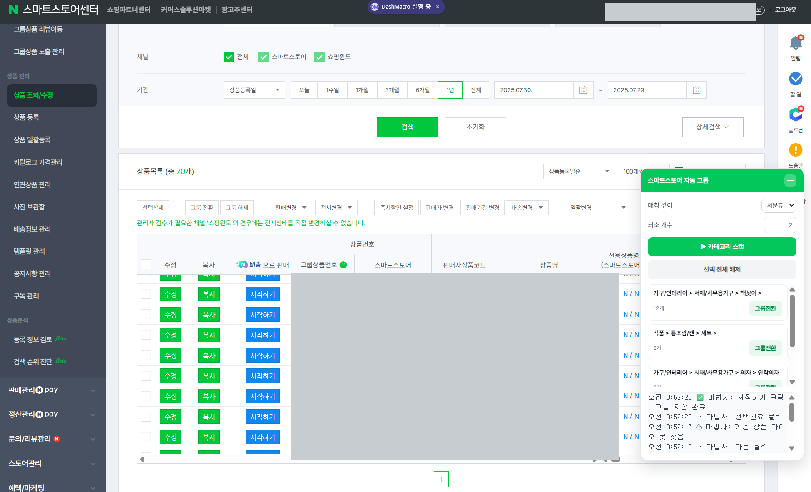
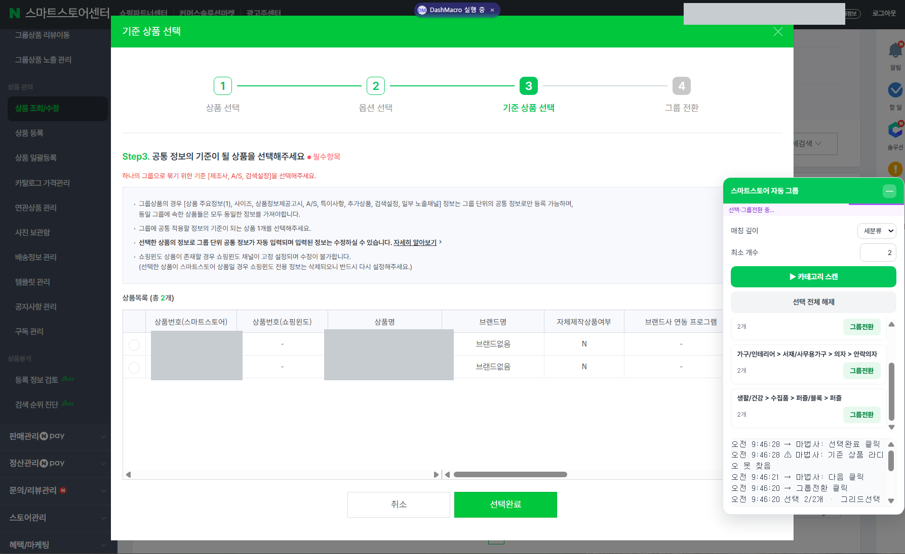
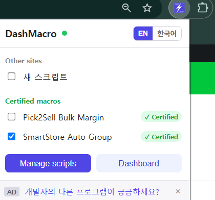

이런 분께 필요합니다
- 상품이 수백 개라 같은 카테고리끼리 찾아 체크하는 것만도 한참 걸리는 셀러
- 색상·사이즈별로 따로 올린 상품을 하나의 그룹(묶음) 상품으로 정리하고 싶은 셀러
- 상품이 많아 그룹 묶기가 엄두가 안 나 계속 미뤄두고 있던 셀러
스스 그룹 상품 / 묶음 상품이 뭔가요
네이버쇼핑이 표준화한 판매옵션에 맞춰 올린 상품들을 하나로 묶은 게 그룹 상품입니다.
색상·사이즈처럼 옵션이 다른 상품이 각각 개별 상품으로 등록되고, 그것들이 하나의 그룹으로 연결돼요.
셀러들은 흔히 "스스 묶음 상품"이라고 부릅니다.
구매자에겐 한 페이지에서 옵션처럼 보이고, 셀러에겐 리뷰·노출을 한곳으로 모을 수 있다는 게 핵심입니다.
수동으로 하는 방법
- 상품관리 → 상품 조회/수정판매자 센터에서 판매중 목록을 엽니다
- 묶을 상품 체크같은 카테고리 상품을 하나하나 찾아 선택 — 여기가 제일 오래 걸립니다
- 그룹 전환 실행선택한 상품을 그룹으로 묶습니다
- 판매옵션 지정대표 옵션 1개 기준으로 각 상품의 판매옵션을 맞춥니다
왜 이렇게 오래 걸릴까? 상품이 수백 개면 같은 카테고리끼리 찾아 체크하는 단순 작업이
대부분의 시간을 잡아먹습니다. 판단은 단순한데 손만 많이 가는, 자동화에 딱 맞는 일이죠.
DashMacro 자동 그룹 — 화면 조작을 대신합니다
단순 반복이라면 사람이 하던 클릭을 그대로 자동화하면 됩니다.
DashMacro가 판매자 센터 화면에서 그 일을 대신합니다.
실제 화면

판매중 70개를 스캔해 카테고리(가구 > 서재/사무용가구 > 책꽂이 12개 …)별로 자동 분류하고, 카테고리마다 [그룹전환] 버튼을 만들어 줍니다.
- 판매중 목록을 훑어 각 상품의 카테고리(대 > 중 > 소 > 세)를 읽습니다
- 카테고리가 같은 상품끼리 자동으로 묶습니다. 몇 단계까지 같아야 할지(대분류만~세분류까지) 직접 지정
- 최소 묶음 개수를 정해, 그보다 적게 모인 카테고리는 건너뜁니다
- 이미 그룹인 상품은 자동 제외
- 선택부터 그룹 전환 실행까지 이어서 처리하고, 진행 내역을 화면에 남깁니다
자동 진행

네이버 그룹 전환 마법사(상품 선택 → 옵션 → 기준 상품 → 전환) 4단계를 사람 대신 클릭하며 진행합니다.
스크립트를 짤 필요 없습니다. DashMacro에 인증 매크로로 기본 포함돼 있어, 옵션에서 켜기만 하면 됩니다.
설정

확장 옵션의 인증 매크로 목록에서 “SmartStore Auto Group” 체크 하나면 준비 끝입니다.
지금 무료로 설치하기
크롬 웹스토어에서 바로 설치할 수 있습니다.
설치 후 Chrome 138+ 는 확장 상세 페이지에서 사용자 스크립트 허용 토글을 켜 주세요.
Chrome 웹스토어에서 설치
안전하게 쓰는 법
- 처음엔 최소 묶음 개수를 크게 잡아 몇 묶음만 만들어 보고 결과 확인
- 세분류(4단계)까지 일치로 시작하세요. 대분류만 맞추면 엉뚱한 상품이 함께 묶입니다
- 그룹 전환 시 기존 옵션은 삭제되고 되돌릴 수 없습니다. 대량 실행 전 반드시 소규모로 검증하세요 (아래 주의사항 참고)
자주 묻는 질문
스스 묶음 상품이랑 그룹 상품이 다른 건가요?
같은 걸 부르는 말입니다. 공식 명칭은 "그룹 상품"이고, 셀러들이 흔히 "묶음 상품"이라고 부릅니다.
상품이 몇 개까지 되나요?
DashMacro는 판매중 목록을 스크롤하며 읽어 처리하므로 개수 제한이 따로 없습니다.
다만 대량은 소규모로 먼저 검증한 뒤 돌리시길 권합니다.
스크립트를 짤 줄 몰라도 되나요?
네. 스마트스토어 자동 그룹은 확장에 기본 포함된 인증 매크로라, 옵션에서 켜기만 하면 됩니다.
내 스토어 정보가 어디로 전송되나요?
아니요. 모든 동작은 내 브라우저 안에서만 일어나고, 스토어 데이터는 외부로 전송되지 않습니다.
⚠ 묶기 전에 꼭 확인하세요
기존 옵션 정보는 삭제됩니다.
그룹 설정이 끝나면 각 상품에 걸려 있던 기존 옵션이 삭제되고, 선택한 판매옵션을 가진
단일 상품으로 전환됩니다. 조합형 옵션을 쓰고 있었다면 그 구조가 사라지니,
전환 전에 옵션·재고를 꼭 백업해 두세요. 되돌릴 수 없습니다.
기존 편집 프로그램과의 싱크가 끊어집니다.
그룹 전환을 하면 각 상품이 새 상품번호로 재등록되어, 기존에 쓰던 편집·업로드 프로그램
(반자동 등록, 대량 업로드 프로그램 등)과의 연동(싱크)이 끊어집니다.
그런 도구로 상품을 관리 중이라면 전환 전에 반드시 확인하세요.
그룹으로 묶은 뒤에는 아래 항목 수정에 제한이 생깁니다.
- 상품명 · 카탈로그 · 최소구매수량 · 상세설명 · 제조사 / 브랜드
그룹 상품 사양(판매옵션 구조, 옵션 삭제, 수정 제한)은
카페24 마켓플러스 공지 및
네이버 스마트스토어센터 매뉴얼 기준입니다. 네이버 정책은 바뀔 수 있으니 실제 작업 전 판매자 센터 공지를 확인하세요.
이 페이지의 일부 링크는 쿠팡 파트너스 활동의 일환으로, 구매 시 일정액의 수수료를 제공받을 수 있습니다.